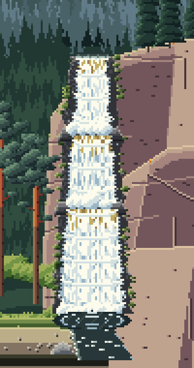
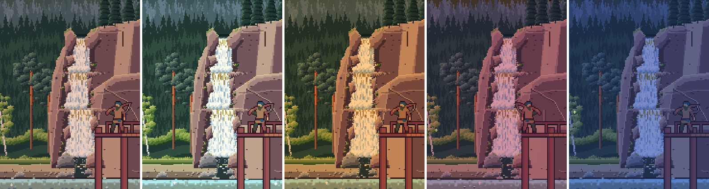
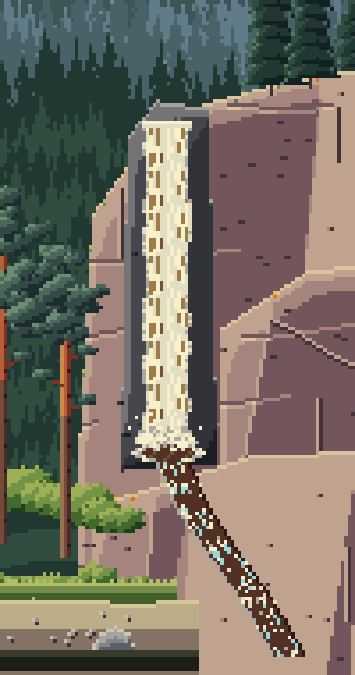
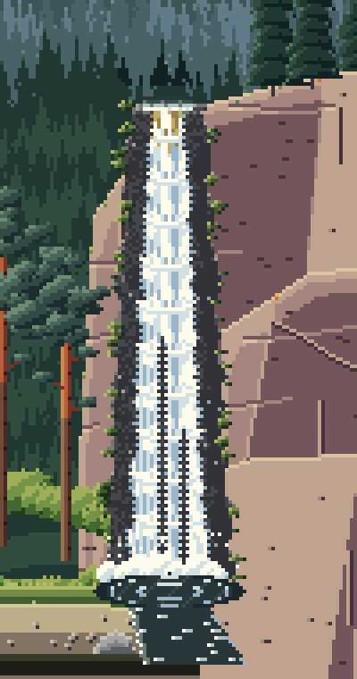
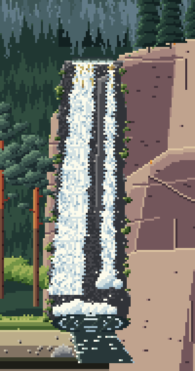
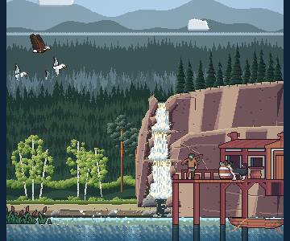

<title>Waterfall Study</title>
<meta name="claude:viewport-fit-sides" content="cover">
<link rel="preconnect" href="https://fonts.googleapis.com">
<link rel="stylesheet" href="https://fonts.googleapis.com/css2?family=Pixelify+Sans:wght@500;700&family=Source+Serif+4:opsz,wght@8..60,400;8..60,600&family=JetBrains+Mono:wght@400;600&display=swap">
<style>
/* Layout: a single reading column like a field-station report, with full-bleed image plates and swatch strips drawn from the lake itself. */
:root {
  --bg: #eef1ec;
  --panel: #e2e8e2;
  --ink: #1b2826;
  --muted: #566764;
  --line: #c3cec7;
  --accent: #a24f45;
  --pine: #2d5747;
  --display: "Pixelify Sans", "Courier New", monospace;
  --body: "Source Serif 4", Georgia, "Times New Roman", serif;
  --mono: "JetBrains Mono", ui-monospace, Menlo, Consolas, monospace;
}
@media (prefers-color-scheme: dark) {
  :root:not([data-theme="light"]) {
    --bg: #0f1918; --panel: #172423; --ink: #e2e9e4; --muted: #97a9a4; --line: #2a3b39;
    --accent: #e29a8b; --pine: #86bba4; color-scheme: dark;
  }
}
:root[data-theme="dark"] {
  --bg: #0f1918; --panel: #172423; --ink: #e2e9e4; --muted: #97a9a4; --line: #2a3b39;
  --accent: #e29a8b; --pine: #86bba4; color-scheme: dark;
}
* { box-sizing: border-box; }
body {
  background: var(--bg); color: var(--ink); font-family: var(--body); font-size: 17px; line-height: 1.6;
  padding-left: max(16px, env(safe-area-inset-left, 0px)); padding-right: max(16px, env(safe-area-inset-right, 0px));
  padding-block: 28px 64px;
}
main { max-width: 720px; margin: 0 auto; display: flex; flex-direction: column; gap: 44px; }
h1, h2, h3 { font-family: var(--display); font-weight: 700; line-height: 1.15; text-wrap: balance; margin: 0; }
h1 { font-size: clamp(32px, 7vw, 46px); letter-spacing: 0.5px; }
h2 { font-size: 26px; color: var(--pine); }
h3 { font-size: 19px; font-weight: 500; }
p { margin: 0; max-width: 65ch; }
section { display: flex; flex-direction: column; gap: 16px; }
.eyebrow { font-family: var(--mono); font-size: 12px; letter-spacing: 1.5px; text-transform: uppercase; color: var(--muted); }
.lede { font-size: 19px; }
a { color: var(--accent); }
figure { margin: 0; display: flex; flex-direction: column; gap: 8px; }
figure img { width: 100%; image-rendering: pixelated; border-radius: 4px; display: block; }
figcaption { font-size: 14px; color: var(--muted); }
.stats { display: grid; grid-template-columns: repeat(auto-fit, minmax(150px, 1fr)); gap: 12px; }
.stat { border-top: 3px solid var(--pine); padding-top: 8px; display: flex; flex-direction: column; gap: 2px; }
.stat b { font-family: var(--display); font-size: 30px; font-weight: 700; font-variant-numeric: tabular-nums; }
.stat span { font-size: 14px; color: var(--muted); }
ol.findings { margin: 0; padding-left: 1.4em; display: flex; flex-direction: column; gap: 12px; }
ol.findings li::marker { font-family: var(--mono); color: var(--accent); }
ol.findings b { font-weight: 600; }
.meter { display: grid; grid-template-columns: 9.5em 1fr; gap: 6px 12px; align-items: center; font-size: 14px; }
.meter .bars { display: flex; flex-direction: column; gap: 3px; }
.bar { height: 10px; border-radius: 2px; background: var(--line); position: relative; }
.bar i { position: absolute; inset: 0 auto 0 0; border-radius: 2px; }
.bar.ours i { background: var(--pine); }
.bar.pack i { background: var(--accent); }
.legend { display: flex; gap: 16px; font-size: 13px; color: var(--muted); flex-wrap: wrap; }
.legend span::before { content: ""; display: inline-block; width: 10px; height: 10px; border-radius: 2px; margin-right: 6px; vertical-align: -1px; }
.legend .l-ours::before { background: var(--pine); }
.legend .l-pack::before { background: var(--accent); }
.skies { display: flex; flex-direction: column; gap: 6px; }
.sky { display: grid; grid-template-columns: 7.5em 1fr; align-items: center; gap: 12px; font-size: 14px; }
.sky div { height: 30px; border-radius: 3px; }
.swatches { display: grid; grid-template-columns: repeat(auto-fit, minmax(200px, 1fr)); gap: 14px; }
.sw { display: flex; flex-direction: column; gap: 6px; min-width: 0; }
.sw .strip { display: flex; height: 34px; border-radius: 3px; overflow: hidden; }
.sw .strip i { flex: 1; }
.sw b { font-weight: 600; font-size: 15px; }
.sw span { font-size: 13px; color: var(--muted); font-family: var(--mono); overflow-wrap: anywhere; }
.lessons { display: grid; grid-template-columns: repeat(auto-fit, minmax(250px, 1fr)); gap: 18px 24px; }
.lessons div { display: flex; flex-direction: column; gap: 4px; }
.lessons h3 { color: var(--accent); }
.lessons p { font-size: 15px; }
ol.rules { margin: 0; padding: 0; list-style: none; counter-reset: r; display: flex; flex-direction: column; border-top: 1px solid var(--line); }
ol.rules li { counter-increment: r; display: grid; grid-template-columns: 2.4em 1fr; gap: 8px; padding: 12px 0; border-bottom: 1px solid var(--line); }
ol.rules li::before { content: counter(r, decimal-leading-zero); font-family: var(--mono); color: var(--muted); font-size: 14px; padding-top: 3px; }
.qs { display: flex; flex-direction: column; gap: 14px; }
.q { background: var(--panel); border-radius: 6px; padding: 16px 18px; display: flex; flex-direction: column; gap: 8px; }
.q h3 { font-size: 18px; }
.q ul { margin: 0; padding-left: 1.2em; font-size: 15px; display: flex; flex-direction: column; gap: 4px; }
.q .rec { font-size: 14px; color: var(--pine); font-family: var(--mono); }
.next { font-size: 15px; color: var(--muted); }
code { font-family: var(--mono); font-size: 0.85em; }
.viewer { display: flex; flex-direction: column; gap: 10px; }
.viewer img { width: 100%; height: auto; image-rendering: pixelated; border-radius: 4px; display: block; aspect-ratio: 360 / 300; background: var(--panel); }
.pick { display: flex; flex-wrap: wrap; gap: 6px; }
.pick button { font: 600 14px var(--mono); padding: 8px 12px; border-radius: 4px; border: 1px solid var(--line); background: var(--panel); color: var(--ink); cursor: pointer; min-width: 44px; }
.pick button[aria-pressed="true"] { background: var(--pine); color: var(--bg); border-color: var(--pine); }
.pick button:focus-visible { outline: 2px solid var(--accent); outline-offset: 2px; }
.cap { font-size: 15px; min-height: 3em; }
.cards { display: grid; grid-template-columns: repeat(auto-fit, minmax(210px, 1fr)); gap: 16px; }
.card { display: flex; flex-direction: column; gap: 6px; }
.card h3 { color: var(--accent); }
.card p { font-size: 15px; }
.card ul { margin: 0; padding-left: 1.1em; font-size: 14px; color: var(--muted); display: flex; flex-direction: column; gap: 3px; }
.motion { display: grid; grid-template-columns: repeat(4, 1fr); gap: 10px; }
.motion figure img { aspect-ratio: 400 / 760; height: auto; }
@media (max-width: 520px) { .motion { grid-template-columns: repeat(2, 1fr); } }
</style>

<main>
  <header style="display:flex;flex-direction:column;gap:12px">
    <span class="eyebrow">Reel It In · Study 3 · 22 Oct 2026</span>
    <h1>The waterfall</h1>
    <p class="lede">The falls in the birch cove looked unnatural: a straight column of even width coming out of a square hole, no river above it, stopping halfway down the cliff, with its stream sliding down the rock like a ramp. Here are three natural forms, drawn after the research, moving as they do in the game.</p>
  </header>

  <section>
    <span class="eyebrow">Your pick, revised · now in the game</span>
    <h2>A, cut into the bluff</h2>
    <p>You picked A but said it sat flat on the rock at the top, the base and all the way down. Now the bluff carries on to the left so the falls sits in the rock; the river comes down a notch worn into the bluff's top, between rock shoulders that overlap the lip; the ledges are the bluff's own, running on into the rock either side; each tier steps sideways; rock juts into the edges; the rock beside the water is wet and darker, with moss; and at the foot it boils behind boulders and runs out between stones.</p>
    <div class="motion" style="grid-template-columns: repeat(2, 1fr)">
      <figure><figcaption>A as first drawn</figcaption></figure>
      <figure><figcaption>A revised</figcaption></figure>
    </div>
    <figure><figcaption>In the game: dawn, day, golden hour, dusk, night</figcaption></figure>
  </section>

  <section>
    <span class="eyebrow">In motion, close up</span>
    <h2>Now, A, B and C</h2>
    <div class="motion">
      <figure><figcaption>Now</figcaption></figure>
      <figure><figcaption>A &middot; tiered cascade</figcaption></figure>
      <figure><figcaption>B &middot; plunge</figcaption></figure>
      <figure><figcaption>C &middot; segmented horsetail</figcaption></figure>
    </div>
  </section>

  <section class="viewer">
    <span class="eyebrow">In the game</span>
    <div class="pick" role="group" aria-label="Version">
      <button data-v="now" aria-pressed="false">Now</button>
      <button data-v="A" aria-pressed="true">A</button>
      <button data-v="B" aria-pressed="false">B</button>
      <button data-v="C" aria-pressed="false">C</button>
    </div>
    <div class="pick" role="group" aria-label="Time of day">
      <button data-t="dawn" aria-pressed="false">Dawn</button>
      <button data-t="day" aria-pressed="true">Day</button>
      <button data-t="golden" aria-pressed="false">Golden</button>
      <button data-t="dusk" aria-pressed="false">Dusk</button>
      <button data-t="night" aria-pressed="false">Night</button>
    </div>
    
    <p class="cap" id="cap"></p>
  </section>

  <section>
    <span class="eyebrow">The three versions</span>
    <h2>What each one tries</h2>
    <div class="cards">
      <div class="card"><h3>A &middot; Tiered cascade</h3><p>The North Shore look, like Gooseberry Falls: the river comes through a notch in the bluff and steps down three dark basalt ledges, each drop a little wider, with a burst of foam at every step.</p><ul><li>The most typical of real north-woods falls</li><li>The busiest of the three</li></ul></div>
      <div class="card"><h3>B &middot; Plunge from a notch</h3><p>One tall drop: the water leaves the rock at a glassy lip, widens as it falls, breaks into strands near the bottom, and lands in a boiling pool.</p><ul><li>The calmest and simplest</li><li>The closest in shape to what you have now, done right</li></ul></div>
      <div class="card"><h3>C &middot; Segmented horsetail</h3><p>A rib of rock splits the flow into a main strand and a thin one. Both stay on the rock face, churning white, and fan out where they meet the pool.</p><ul><li>The most natural-looking at small size</li><li>Rock shows between the strands</li></ul></div>
    </div>
  </section>

  <section>
    <span class="eyebrow">What the research says</span>
    <h2>The rules at work</h2>
    <ol class="rules">
      <li><b>A mouth, a flow and a splash.</b> The river shows at the top, with a glassy line where it bends over the lip; the flow has vertical streaks and bands of light that sag in the middle and run down 3 pixels a frame; the splash is round puffs of foam that loop with it.</li>
      <li><b>White water, blue shadows.</b> Aerated water is white, and its shadows take the sky's blue. Amber only where it's thin, just over the lip. Brown on its own read as wood: that was the log.</li>
      <li><b>Wet rock, green rims.</b> Dark, wet basalt hugs the water, with moss along its edges.</li>
      <li><b>The pool at the bottom.</b> At the level of the beach, dark with sky in its ripples, and a short, wide outflow to the lake instead of a ramp down the cliff.</li>
    </ol>
    <p>Sources are in <code>docs/studio/research/waterfalls.md</code>: Slynyrd's <a href="https://slynyrd.com/blog/2018/10/12/pixelblog-10-water-in-motion">Pixelblog on water in motion</a>, a <a href="https://itch.io/devlog/681218/devlog-06-improving-the-waterfall-loops.amp">devlog on looping waterfalls</a>, and guides to waterfall forms and the North Shore's falls.</p>
  </section>

  <section>
    <span class="eyebrow">Your call</span>
    <h2>Anything still off?</h2>
    <p>Revised A is in the game now. Tell me anything that still feels flat or unnatural and I'll keep working it.</p>
  </section>
</main>
<script>
(function () {
  var notes = {
    now: "The game today: a straight column out of a square hole, its stream sliding down the rock.",
    A: "A, revised: a tiered cascade cut into the bluff, now in the game.",
    B: "B: plunge from a notch. One drop, widening and breaking into strands.",
    C: "C: segmented horsetail. Two strands on the rock, split by a rib of rock."
  };
  var times = { dawn: "dawn", day: "midday", golden: "golden hour", dusk: "dusk", night: "night" };
  var v = "A", t = "day";
  var img = document.getElementById("shot"), cap = document.getElementById("cap");
  function show() {
    img.src = "study3/" + v + "-" + t + ".png";
    img.alt = (v === "now" ? "The game now" : "Version " + v) + " at " + times[t];
    cap.textContent = notes[v];
    document.querySelectorAll("[data-v]").forEach(function (b) { b.setAttribute("aria-pressed", b.dataset.v === v); });
    document.querySelectorAll("[data-t]").forEach(function (b) { b.setAttribute("aria-pressed", b.dataset.t === t); });
  }
  document.querySelectorAll("[data-v]").forEach(function (b) { b.addEventListener("click", function () { v = b.dataset.v; show(); }); });
  document.querySelectorAll("[data-t]").forEach(function (b) { b.addEventListener("click", function () { t = b.dataset.t; show(); }); });
  show();
})();
</script>
